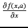
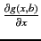

The first set of operations is same as that for other operators except that the value pushed on the VMS is L+R.
Expr(L,R) {return L+R}; /* Compute the value for
ComputeResult(L,R,Expr); the addition operator */
Since the partial derivatives of the expression with respect to the
non-common variables is already on the appropriate DS, no separate
operation is required for these variables. The partial derivatives
with respect to the common set of variables is computed as

and

. The pseudo code for these operations is:
Expr(L,R,dxL,dxR) {return (dxL + dxR)};
dCommonVar(L,R,Expr);